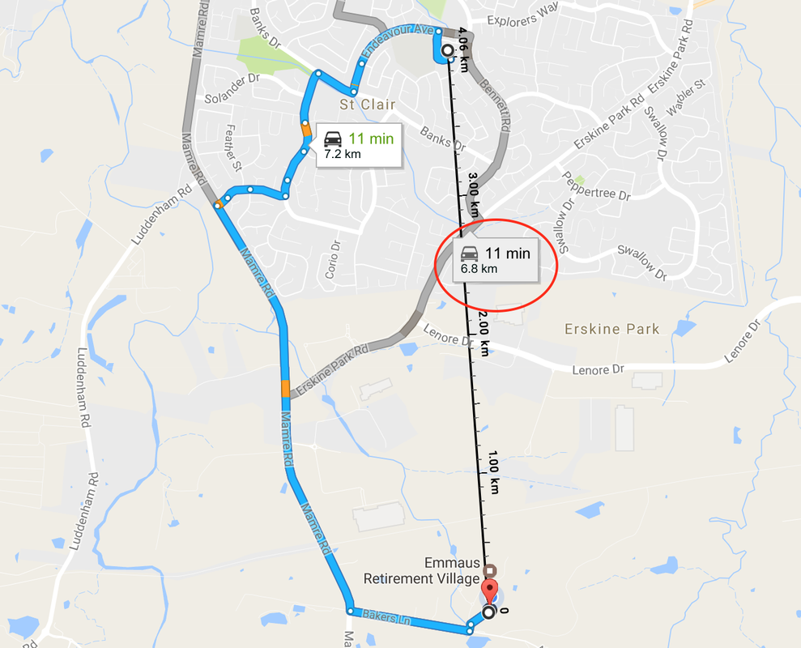

Kinematics

Galileo Galilei
Italian astronomer, physicist and engineer
(1564 – 1642)
Galileo Galilei
- Speed y velocity
- Gravity y free fall
- Principles of relativity
- Inertia
- Projectiles
Is there a relation between the time and the distance of the fall?
Answer
Answer
\[d = \frac{g}{2} t^2\]
Answer
\[d = \frac{9.81 \frac{m}{s^2}}{2} t^2\]
Answer
\[d = 4.9 t^2 \; m/s^2 \]
Experiment 1
BASIC CONCEPTS
Distance vs displacement
\[velocity = \frac{distance}{time}\]
\[v = \frac{[m]}{[s]}\]
Velocity
- Like an arrow, it has:
- Magnitude
- Direction
- Sense